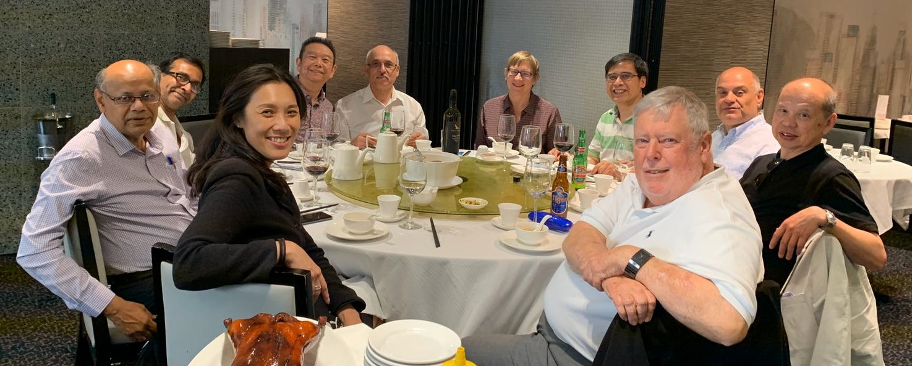
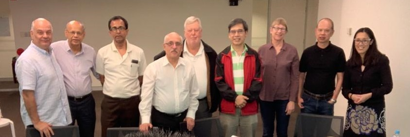

This is a prototype site - of the home page only.
Please send any comments to feedback@assisttosucceed.com.au
The first prototype can be found here
The second prototype can be found here
The first prototype can be found here
The second prototype can be found here

Assist to Succeed
Consulting
Consulting
Registered Charity
Member of NCOSS
Member of NCOSS
We are a team of experienced professionals who wish to use our many years of experience to benefit our community. We utilise our skills and experience to assist charitable community groups and NFPs.
Our group is a registered charity. All our work is pro bono and we are only funded by donations. We are based in Sydney and have been operating since 2013.
Our diverse group is composed of professionals from a range of backgrounds including senior management, consulting, information technology, engineering, finance, project management, communication technology and business development.
We provide, advice, guidance and review, rather than usually delivering projects.
We often contribute by sitting on advisory groups and steering committees responsible for key initiatives or by providing advice to key executives on a one-on-one basis.
We are valued for our independence, free of organisational politics or the motivation to attract fee-paying business.
